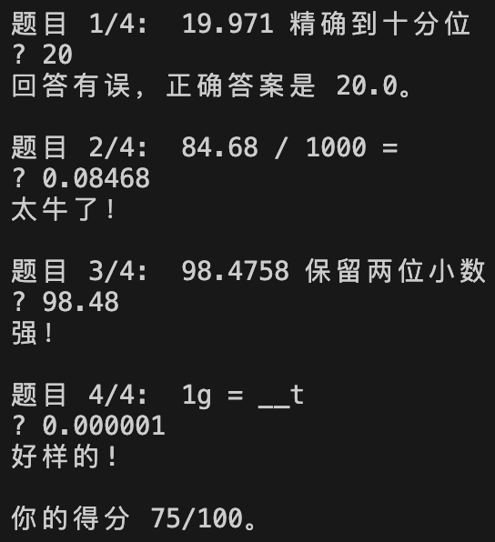

开始学习数学前，我先带小续学习了两个月 Python，之后小学数学编程项目正式开始。
学习内容和顺序完全按照人教版小学数学教材，每个单元的学习分为如下三个步骤：
- 教材：我带他学习教材内容，他自己做教材上的练习题；
- 编程：布置 1-2 个与本单元数学内容紧密联系的编程问题；
- 检测卷：单元检测卷 90 分以上即可结束本单元的学习。
一个学期结束后，会有期末检测卷，期末检测卷连续两次 90 分以上即可结束本学期的学习。


通过编程高效学习数学
- 学得快。平均每两个月完成一个学期（五个月）的课程，6-7 岁一年左右完成了小学三至五年级的数学学习。
- 学得好。成绩维持在百分制的 90 分以上。
过程中顺带学习了编程
- 熟练掌握 Python 语言，包括各种内置数据类型、函数、类和对象、随机、图形界面编程、线程、异常处理、matplotlib 等。
- 可以快速将解决问题的方法和步骤转化为 Python 程序。在数学学习以外，可以主动用编程解决实际问题。
- 编程时能有意识地做一些局部优化，以减少程序的运算次数。


高效学习数学的原因
- 编程要解决的是与本单元学习的数学内容紧密联系的问题，在把一个数学方法（步骤）翻译成机器指令的过程中，需要正确理解和掌握所学的数学知识和技能，编出来的程序才是对的。这种主动的输出和调试纠错的过程配合适量习题在效率和效果上要优于被动的题海战术。
- 程序可以把解决问题的中间过程和最终结果显示出来，有时还能把知识点直观、形象的展示出来，在一次次程序运行的过程中，加深对知识点的理解。
- 自己编的，都是好的。例如有的程序是随机出练习题，相比于同类 App，界面虽然简陋点，但孩子们做起来往往乐此不疲。（据说学习的最高境界就是自己出题考自己。🙂）
高效学习编程的原因
- 适合编程学习者解决的编程问题，是从知识层面和应用层面都能够被他们理解的问题。而儿童的知识量有限、对世界的认知也有限，所以很多适合成人的编程案例和练习并不适合儿童。数学编程项目中的编程问题都来自于他们正在学习的小学教材，易于理解，而且还能产生学以致用的满足感。
- 有了大量适合的编程问题，就可以进行大量的编程实践。编程的量上去了，编程技能才能得以巩固，并在此基础上循序渐进，学习更多的编程知识。
总之，编程是数学的好朋友，二者相辅相成、相得益彰。“数学+编程” 让学习者在高效学习数学的同时，还能熟练掌握一门编程语言。

附：小续在项目开始前的相关学习经历
- 4 岁开始中文、英文识字。
- 学中文保证了小续能够阅读数学教材和做检测卷。
- 学英文保证了小续能够阅读网上简单的 Python 教程和文档。
- 4-5 岁在平板电脑上玩编程游戏 (Coding Games): Code Karts, Scratch Jr., Box Island, Lightbot, A.L.E.X。
- 5 岁 TypingClub 学习打字。
- 5-6 岁图形化编程 (Blockly-based Coding): Blockly Games, Scratch。
- 5-6 岁学习一、二年级数学。
- 6 岁学习了两个月 Python。
- Runestone Academy - Foundations of Python Programming 我带小续学习所使用的教程。
- Sololearn 短小的教程 (Bite-sized)，小续自学、做练习。
- Codecombat 靠编程通关的游戏。